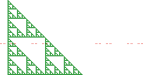

| To understand the dimension of the intersection of sets, we must
understand the codimension of a set. |
| Now we use codimension to study the dimension of the intersection
of Euclidean sets. |
| Although the proof is quite complicated, the intersection result extends to fractal shapes: |
| if A and B are subsets of n-dimensional space, then |
| codim(A ∩ B) = codim(A) + codim(B) |
| That is, |
| n - dim(A ∩ B) = (n - dim(A)) + (n - dim(B)) |
| giving |
| dim(A ∩ B) = dim(A) + dim(B) - n |
|
| |
| Example Suppose A is a gasket with dimension d(A) = log(3)/log(2) = 1.58496,
and B is a Cantor set with dimension d(B) = log(2)/log(3) = 0.63093. |
|  |
| Certainly, some placements of the Cantor set will miss the gasket completely. However,
typically |
| d(A ∩ B) = 1.58496 + 0.63093 - 2 = 0.21589. |
| |
| Example Suppose A and B are Cantor sets in the (1-dimensional) line, and both dim(A) and dim(B)
are less than 1/2. |
| Then typically (that is, for almost all placements of A and B in the line), |
| codim(A ∩ B) = codim(A) + codim(B) > 1 |
| hence dim(A ∩ B) < 0. In other words, almost all placements of A and B are
disjoint. |
|